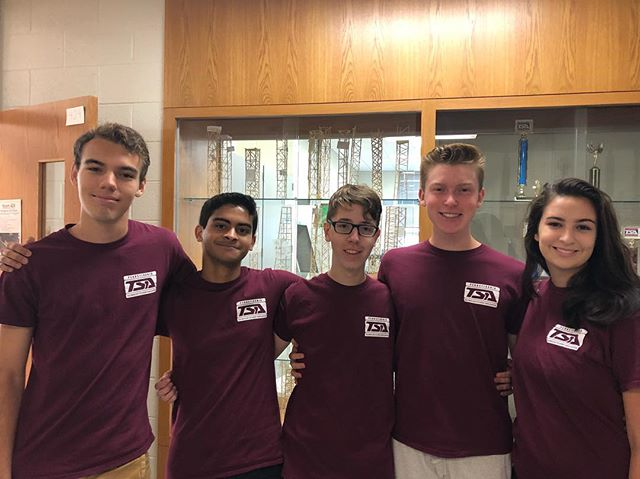
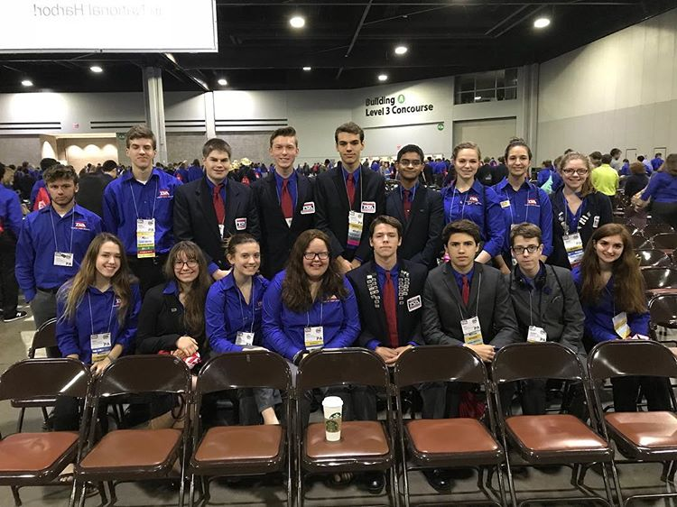

Phasellus non pulvinar erat. Fusce tincidunt nisl eget ipsum.
 The Boyertown Area High School (BASH) TSA chapter is a group of hard-working, involved individuals, consisting of 10th, 11th, and 12th grade students, who regularly participate in community activities, perform in competitions, and are committed to fundraising for organizations, such as the American Cancer Society.
Boyertown Area Senior High TSA was founded in 1989. Since the chapter's inception, its members have held to the high standard created by the BASH TSA advisors, while following the high expectations and specific guidelines, which are consistent nationwide, throughout all other TSA chapters. Students of this chapter are also required to compete in no less than three events while attending either the regional, state, and national conference.
These chapter memebers are required to attend mandatory meetings on the first Wednesday of every month to discuss business related to competitions, fundraising, and other activities. Members are also expected to frequently attend work days on Tuesdays and Thursdays. Students are responsible for paying all fees and dues, along with participating in fundraising efforts. It is expected that proper TSA attire will be worn by all members at competitions, and that the rules set in place by both TSA and the respective advisor, along with the school are to be followed at all times.
 Boyertown Area Senior High has experienced a great deal of success while a part of TSA, having had numerous state and national victories. Students placed in a plethora of categories, ranging from Fashion Design to Webmaster, allowing them to put their diverse talents on full display.
Boyertown Area Senior High has also been the most successful chapter at the Region 9 TSA competition, qualifying for and winning more events than any other chapter in the said region.
National Placement of 2018: Top 12 in Coding,
6th Place in Chapter Team, 4th Place in SciVis,
5th Place in Software Development, and
Semi-Finalists in Structural Engineering
The Technology Student Association (TSA) enhances personal development, leadership, and career opportunities in science, technology, engineering, and math (STEM), whereby members apply and integrate these concepts through intracurricular activities, competitions, and related programs.
Learning To Live In A Technical World
I believe that Technology Education holds an important place in my life in the technical world. I believe there is a need for the development of good attitudes concerning work, tools, materials, experimentation, and processes of industry. Guided by my teachers, artisans from industry, and my own initiative, I will strive to do my best in making my school, community, state, and nation better places in which to live. I will accept the responsibilities that are mine. I will accept the theories that are supported by proper evidence. I will explore on my own for safer, more effective methods of working and living. I will strive to develop a cooperative attitude and will exercise tact and respect for other individuals. Through the work of my hands and mind, I will express my ideas to the best of my ability. I will make it my goal to do better each day the task before me, and to be steadfast in my belief in my God, and my fellow Americans.